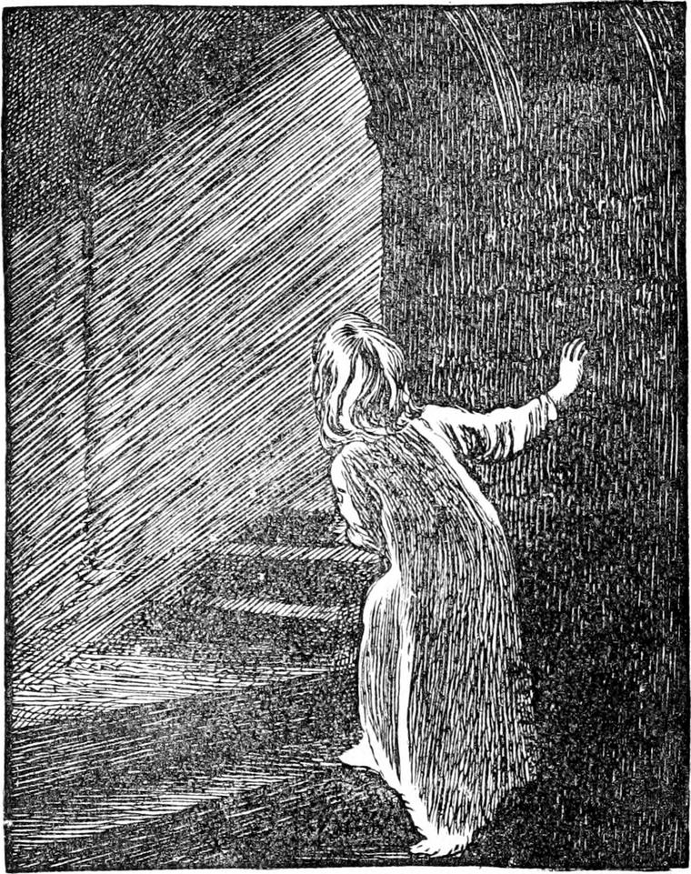

Nothing more happened worth telling for some time. The autumn came and went by. There were no more flowers in the garden. The wind blew strong, and howled among the rocks. The rain fell, and drenched the few yellow and red leaves that could not get off the bare branches. Again and again there would be a glorious morning followed by a pouring afternoon, and sometimes, for a week together, there would be rain, nothing but rain, all day, and then the most lovely cloudless night, with the sky all out in full-blown stars—not one missing. But the princess could not see much of them, for she went to bed early. The winter drew on, and she found things growing dreary. When it was too stormy to go out, and she had got tired of her toys, Lootie would take her about the house, sometimes to the housekeeper's room, where the housekeeper, who was a good, kind old woman, made much of her—sometimes to the servants' hall or the kitchen, where she was not princess merely, but absolute queen, and ran a great risk of being spoiled. Sometimes she would run off herself to the room where the men-at-arms whom the king had left sat, and they showed her their arms and accoutrements and did what they could to amuse her. Still at times she found it very dreary, and often and often wished that her huge great grandmother had not been a dream.
One morning the nurse left her with the housekeeper for a while. To amuse her she turned out the contents of an old cabinet upon the table. The little princess found her treasures, queer ancient ornaments, and many things the use of which she could not imagine, far more interesting than her own toys, and sat playing with them for two hours or more. But, at length, in handling a curious old-fashioned brooch, she ran the pin of it into her thumb, and gave a little scream with the sharpness of the pain, but would have thought little more of it had not the pain increased and her thumb begun to swell. This alarmed the housekeeper greatly. The nurse was fetched; the doctor was sent for; her hand was poulticed, and long before her usual time she was put to bed. The pain still continued, and although she fell asleep and dreamed a good many dreams, there was the pain always in every dream. At last it woke her up.
The moon was shining brightly into the room. The poultice had fallen off her hand and it was burning hot. She fancied if she could hold it into the moonlight that would cool it. So she got out of bed, without waking the nurse who lay at the other end of the room, and went to the window. When she looked out she saw one of the men-at-arms walking in the garden with the moonlight glancing on his armour. She was just going to tap on the window and call him, for she wanted to tell him all about it, when she bethought herself that that might wake Lootie, and she would put her into her bed again. So she resolved to go to the window of another room, and call him from there. It was so much nicer to have somebody to talk to than to lie awake in bed with the burning pain in her hand. She opened the door very gently and went through the nursery, which did not look into the garden, to go to the other window. But when she came to the foot of the old staircase there was the moon shining down from some window high up, and making the worm-eaten oak look very strange and delicate and lovely. In a moment she was putting her little feet one after the other in the silvery path up the stair, looking behind as she went, to see the shadow they made in the middle of the silver. Some little girls would have been afraid to find themselves thus alone in the middle of the night, but Irene was a princess.

As she went slowly up the stair, not quite sure that she was not dreaming, suddenly a great longing woke up in her heart to try once more whether she could not find the old lady with the silvery hair. 'If she is a dream,' she said to herself, 'then I am the likelier to find her, if I am dreaming.'
So up and up she went, stair after stair, until she came to the many rooms—all just as she had seen them before. Through passage after passage she softly sped, comforting herself that if she should lose her way it would not matter much, because when she woke she would find herself in her own bed with Lootie not far off. But, as if she had known every step of the way, she walked straight to the door at the foot of the narrow stair that led to the tower.
'What if I should realreality-really find my beautiful old grandmother up there!' she said to herself as she crept up the steep steps.
When she reached the top she stood a moment listening in the dark, for there was no moon there. Yes! it was! it was the hum of the spinning-wheel! What a diligent grandmother to work both day and night! She tapped gently at the door.
'Come in, Irene,' said the sweet voice.
The princess opened the door and entered. There was the moonlight streaming in at the window, and in the middle of the moonlight sat the old lady in her black dress with the white lace, and her silvery hair mingling with the moonlight, so that you could not have told which was which. 'Come in, Irene,' she said again. 'Can you tell me what I am spinning?'
'She speaks,' thought Irene, 'just as if she had seen me five minutes ago, or yesterday at the farthest. —No,' she answered; 'I don't know what you are spinning. Please, I thought you were a dream. Why couldn't I find you before, great-great-grandmother?'
'That you are hardly old enough to understand. But you would have found me sooner if you hadn't come to think I was a dream. I will give you one reason though why you couldn't find me. I didn't want you to find me.'
'Why, please?'
'Because I did not want Lootie to know I was here.'
'But you told me to tell Lootie.'
'Yes. But I knew Lootie would not believe you. If she were to see me sitting spinning here, she wouldn't believe me, either.'
'Why?'
'Because she couldn't. She would rub her eyes, and go away and say she felt queer, and forget half of it and more, and then say it had been all a dream.'
'Just like me,' said Irene, feeling very much ashamed of herself.
'Yes, a good deal like you, but not just like you; for you've come again; and Lootie wouldn't have come again. She would have said, No, no—she had had enough of such nonsense.'
'Is it naughty of Lootie, then?'
'It would be naughty of you. I've never done anything for Lootie.'
'And you did wash my face and hands for me,' said Irene, beginning to cry.
The old lady smiled a sweet smile and said:
'I'm not vexed with you, my child—nor with Lootie either. But I don't want you to say anything more to Lootie about me. If she should ask you, you must just be silent. But I do not think she will ask you.'
All the time they talked the old lady kept on spinning.
'You haven't told me yet what I am spinning,' she said.
'Because I don't know. It's very pretty stuff.'
It was indeed very pretty stuff. There was a good bunch of it on the distaff attached to the spinning-wheel, and in the moonlight it shone like—what shall I say it was like? It was not white enough for silver—yes, it was like silver, but shone grey rather than white, and glittered only a little. And the thread the old lady drew out from it was so fine that Irene could hardly see it. 'I am spinning this for you, my child.'
'For me! What am I to do with it, please?'
'I will tell you by and by. But first I will tell you what it is. It is spider-web—of a particular kind. My pigeons bring it me from over the great sea. There is only one forest where the spiders live who make this particular kind—the finest and strongest of any. I have nearly finished my present job. What is on the rock now will be enough. I have a week's work there yet, though,' she added, looking at the bunch.
'Do you work all day and all night, too, great-great-great-great-grandmother?' said the princess, thinking to be very polite with so many greats.
'I am not quite so great as all that,' she answered, smiling almost merrily. 'If you call me grandmother, that will do. No, I don't work every night—only moonlit nights, and then no longer than the moon shines upon my wheel. I shan't work much longer tonight.'
'And what will you do next, grandmother?'
'Go to bed. Would you like to see my bedroom?'
'Yes, that I should.'
'Then I think I won't work any longer tonight. I shall be in good time.'
The old lady rose, and left her wheel standing just as it was. You see there was no good in putting it away, for where there was not any furniture there was no danger of being untidy.
Then she took Irene by the hand, but it was her bad hand and Irene gave a little cry of pain. 'My child!' said her grandmother, 'what is the matter?'
Irene held her hand into the moonlight, that the old lady might see it, and told her all about it, at which she looked grave. But she only said: 'Give me your other hand'; and, having led her out upon the little dark landing, opened the door on the opposite side of it. What was Irene's surprise to see the loveliest room she had ever seen in her life! It was large and lofty, and dome-shaped. From the centre hung a lamp as round as a ball, shining as if with the brightest moonlight, which made everything visible in the room, though not so clearly that the princess could tell what many of the things were. A large oval bed stood in the middle, with a coverlid of rose colour, and velvet curtains all round it of a lovely pale blue. The walls were also blue—spangled all over with what looked like stars of silver.
The old lady left her and, going to a strange-looking cabinet, opened it and took out a curious silver casket. Then she sat down on a low chair and, calling Irene, made her kneel before her while she looked at her hand. Having examined it, she opened the casket, and took from it a little ointment. The sweetest odour filled the room—like that of roses and lilies—as she rubbed the ointment gently all over the hot swollen hand. Her touch was so pleasant and cool that it seemed to drive away the pain and heat wherever it came.
'Oh, grandmother! it is so nice!' said Irene. 'Thank you; thank you.'
Then the old lady went to a chest of drawers, and took out a large handkerchief of gossamer-like cambric, which she tied round her hand.
'I don't think I can let you go away tonight,' she said. 'Would you like to sleep with me?'
'Oh, yes, yes, dear grandmother,' said Irene, and would have clapped her hands, forgetting that she could not.
'You won't be afraid, then, to go to bed with such an old woman?'
'No. You are so beautiful, grandmother.'
'But I am very old.'
'And I suppose I am very young. You won't mind sleeping with such a very young woman, grandmother?'
'You sweet little pertness!' said the old lady, and drew her towards her, and kissed her on the forehead and the cheek and the mouth. Then she got a large silver basin, and having poured some water into it made Irene sit on the chair, and washed her feet. This done, she was ready for bed. And oh, what a delicious bed it was into which her grandmother laid her! She hardly could have told she was lying upon anything: she felt nothing but the softness.
The old lady having undressed herself lay down beside her.
'Why don't you put out your moon?' asked the princess.
'That never goes out, night or day,' she answered. 'In the darkest night, if any of my pigeons are out on a message, they always see my moon and know where to fly to.'
'But if somebody besides the pigeons were to see it—somebody about the house, I mean—they would come to look what it was and find you.'
'The better for them, then,' said the old lady. 'But it does not happen above five times in a hundred years that anyone does see it.
The greater part of those who do take it for a meteor, wink their eyes, and forget it again. Besides, nobody could find the room except I pleased. Besides, again—I will tell you a secret—if that light were to go out you would fancy yourself lying in a bare garret, on a heap of old straw, and would not see one of the pleasant things round about you all the time.'
'I hope it will never go out,' said the princess.
'I hope not. But it is time we both went to sleep. Shall I take you in my arms?'
The little princess nestled close up to the old lady, who took her in both her arms and held her close to her bosom.
'Oh, dear! this is so nice!' said the princess. 'I didn't know anything in the world could be so comfortable. I should like to lie here for ever.'
'You may if you will,' said the old lady. 'But I must put you to one trial-not a very hard one, I hope. This night week you must come back to me. If you don't, I do not know when you may find me again, and you will soon want me very much.'
'Oh! please, don't let me forget.'
'You shall not forget. The only question is whether you will believe I am anywhere—whether you will believe I am anything but a dream. You may be sure I will do all I can to help you to come. But it will rest with yourself, after all. On the night of next Friday, you must come to me. Mind now.'
'I will try,' said the princess.
'Then good night,' said the old lady, and kissed the forehead which lay in her bosom.
In a moment more the little princess was dreaming in the midst of the loveliest dreams—of summer seas and moonlight and mossy springs and great murmuring trees, and beds of wild flowers with such odours as she had never smelled before. But, after all, no dream could be more lovely than what she had left behind when she fell asleep.
In the morning she found herself in her own bed. There was no handkerchief or anything else on her hand, only a sweet odour lingered about it. The swelling had all gone down; the prick of the brooch had vanished—in fact, her hand was perfectly well.